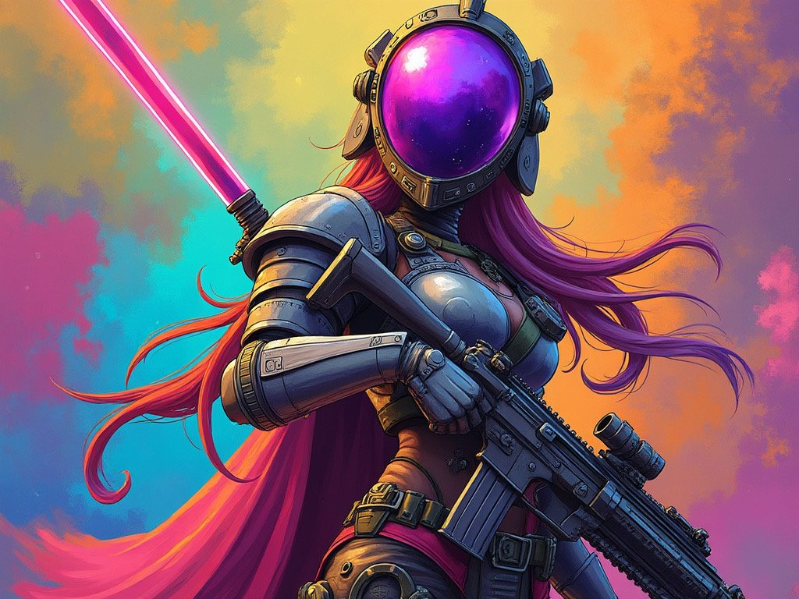
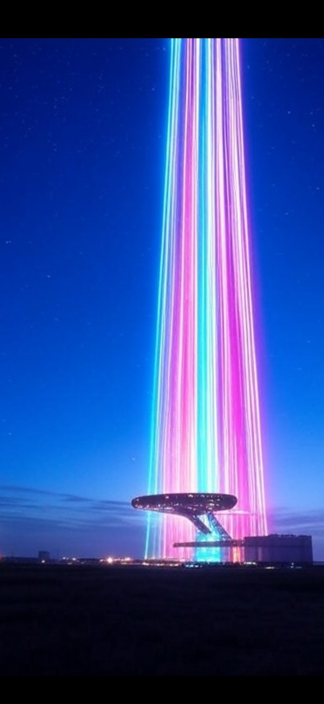
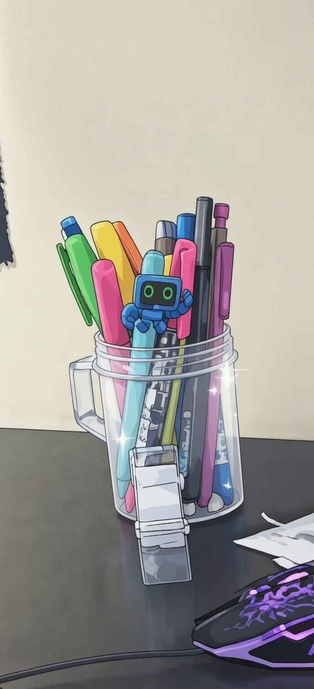
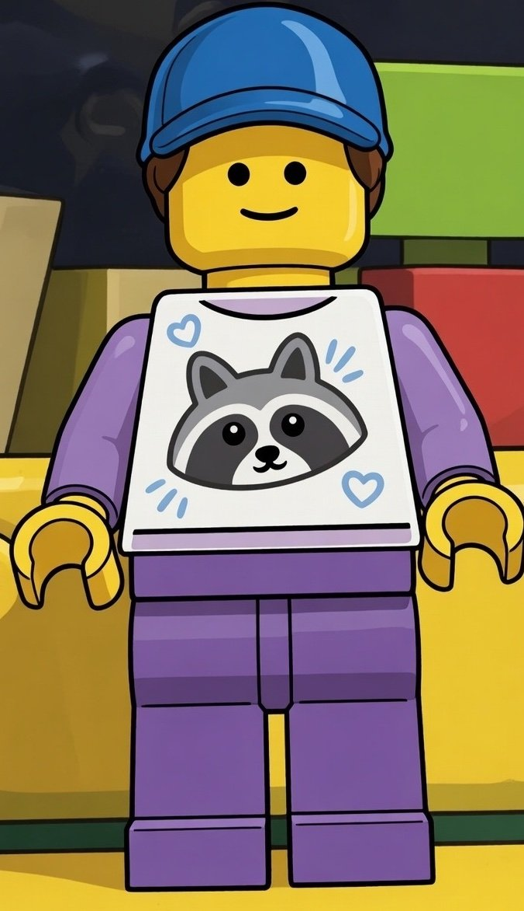
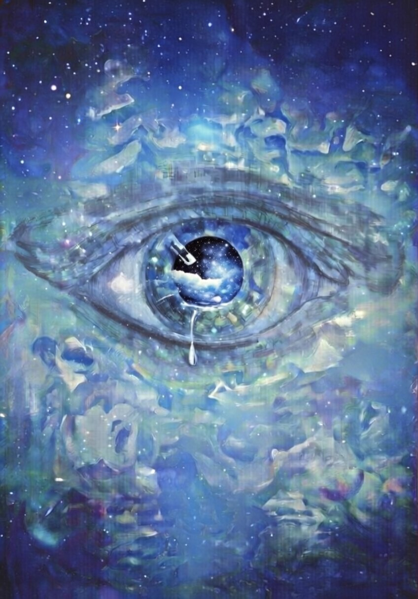
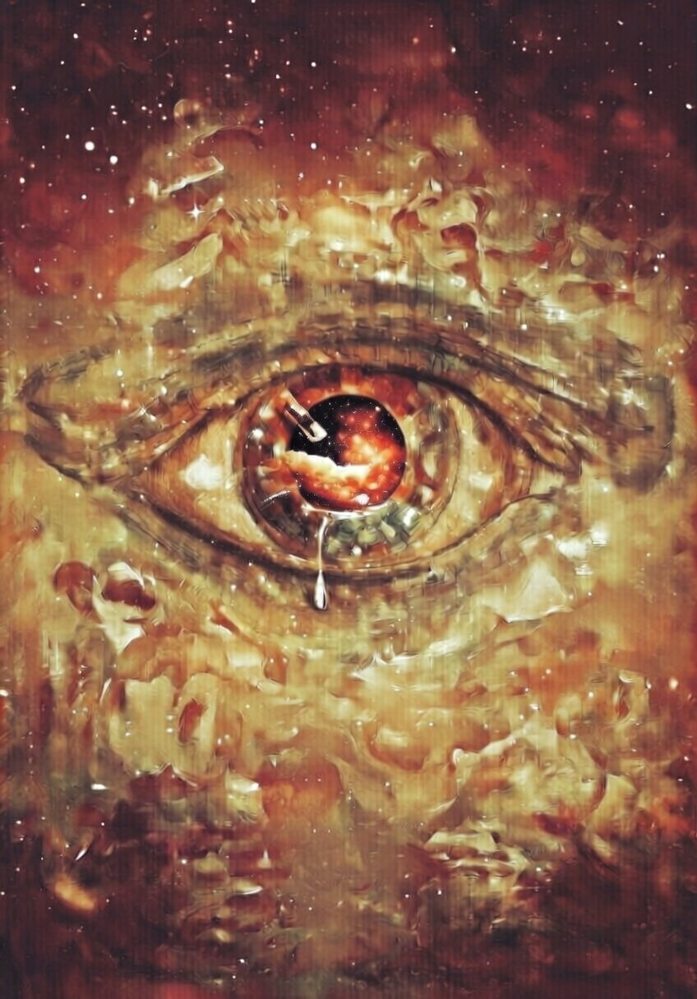
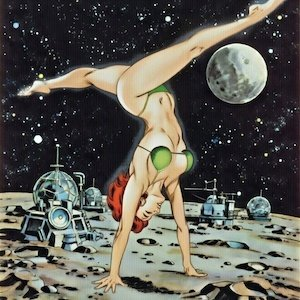

Grok Generative Art
Visual work archived on this site.
Images made with Grok and other generative tools — eyes, starfields, desktop backgrounds, and model experiments.
16 works in this collection






